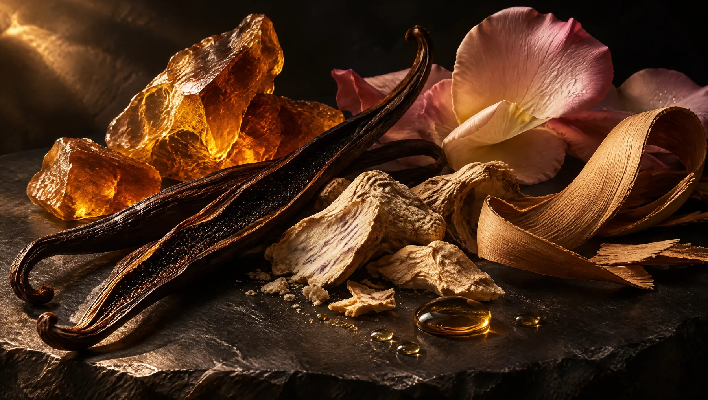
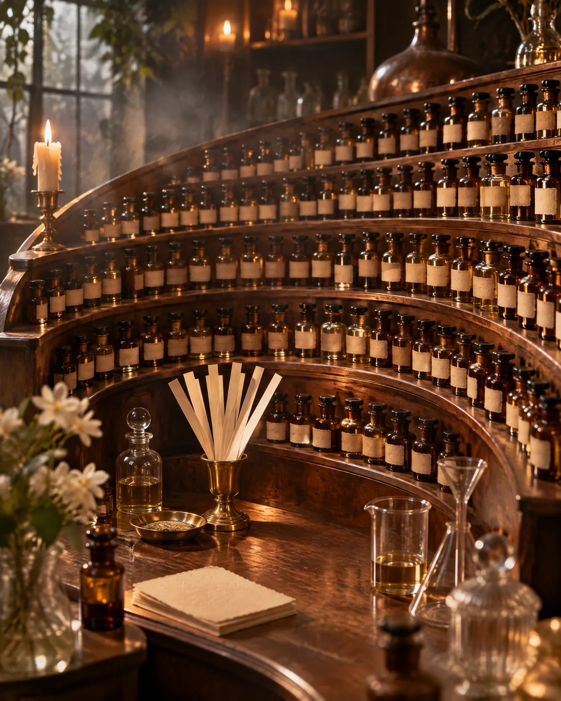
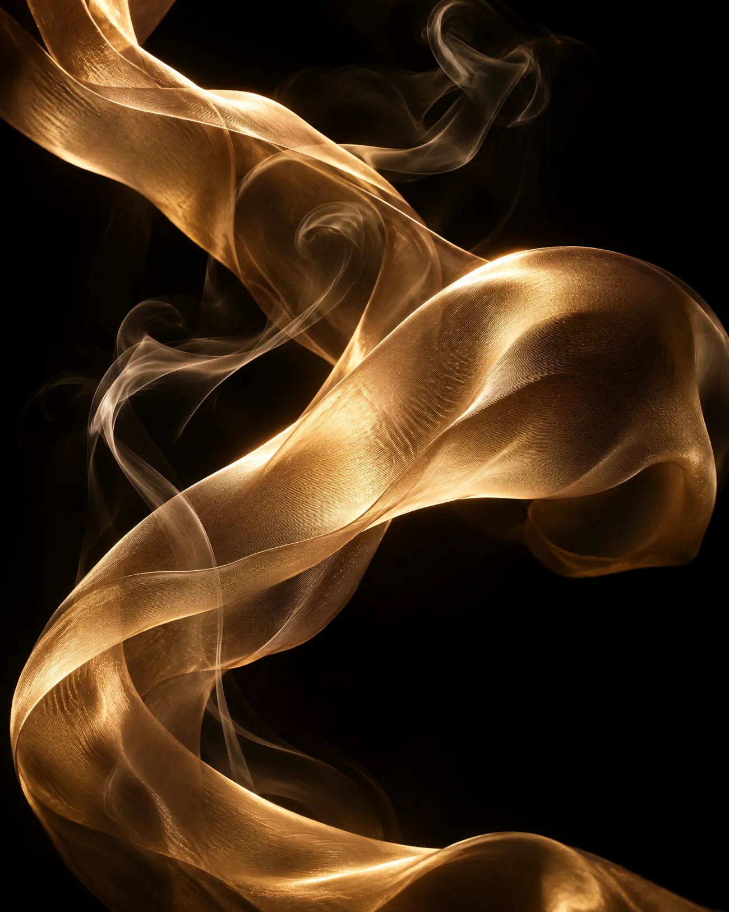

N° 01
Nuit d'Ambre
Ambré poudré
Bergamote, poivre rose, iris, rose de mai, ambre gris, vanille, santal.
- 50 ml
- 185 €
- 100 ml
- 270 €
Sévane · Maison de parfum, Paris
Un ambre porté près de la peau : iris poudré, vanille sèche, santal. Extrait de parfum, composé et mis en flacon dans notre atelier.
01 — Notes de tête
L'ouverture est brève et claire. Une bergamote de Calabre pressée à froid, relevée de baies roses : dix minutes de lumière avant la tombée du soir.
02 — Notes de cœur
Le capot se lève, le cœur s'ouvre. Un beurre d'iris de Toscane, poudré, presque froid ; puis la rose de mai, cueillie à Grasse trois semaines par an, avant dix heures.
03 — Notes de fond
Ce qui reste sur un col le lendemain. Un accord d'ambre gris, salé, une vanille de Madagascar sans sucre, un santal lacté. La tenue se compte en heures, le souvenir en jours.
La collection
Chaque composition existe en extrait, en deux contenances. Les flacons se rechargent à l'atelier, autant de fois qu'on le souhaite.
N° 01
Ambré poudré
Bergamote, poivre rose, iris, rose de mai, ambre gris, vanille, santal.
N° 02
Boisé frais
Pamplemousse, feuille de violette, vétiver d'Haïti, cèdre, musc blanc.
N° 03
Fruité vert
Feuille de figuier, bourgeon de cassis, lait de figue, bois de gaïac.
N° 04
Cuir doux
Safran, osmanthus, daim, fève tonka, une pointe d'encens.
Recharge de 100 ml à l'atelier : 150 €. Coffret découverte, quatre fioles de 2 ml : 18 €, déduits du premier flacon.

Les matières premières
La formule de Nuit d'Ambre tient en trente et une lignes. Voici celles qui comptent, et d'où elles viennent.
Essence pressée à froid, récolte de décembre
Extraction au CO₂ : une facette poivrée, presque fruitée
Rhizomes séchés trois ans, beurre affiné trois ans de plus
Absolue, cueillette à la main au lever du jour
Résine de ciste, la part chaude de l'accord ambré
Gousses noires, infusées huit semaines dans l'alcool
Plantations gérées, distillation lente à la vapeur
Aucune matière animale : un accord minéral et salé, recomposé à l'orgue

L'atelier du parfumeur
Hélène Sévane compose seule, à l'orgue, sans cahier des charges ni calendrier. Nuit d'Ambre a demandé deux ans et cent quarante-sept essais ; le cent quarante-huitième est dans le flacon.
Chaque lot macère six semaines, puis il est filtré et mis en flacon à la main, ici même. L'atelier se visite le premier samedi du mois, sur rendez-vous.

Le sillage
Un extrait ne se vaporise pas en nuage : il se pose. Deux pressions suffisent, au creux du cou et à l'intérieur du poignet. Le parfum ne précède pas celle ou celui qui le porte ; il reste un pas derrière.
Le flacon est fait pour durer : verre épais taillé à pans coupés, capot de laiton doré, plaque gravée. On le garde, on le fait remplir.
Essayer sur sa peau« Un ambre qui ne hausse jamais la voix. On le remarque surtout quand il a quitté la pièce. »
Commander des échantillons
Un parfum se juge au bout de quelques heures, jamais sur une mouillette. Le coffret découverte réunit les quatre compositions en fioles de 2 ml ; son prix est déduit de votre premier flacon.